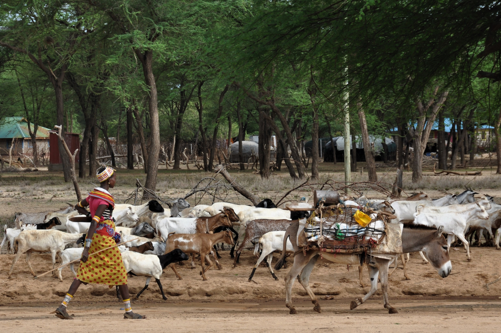
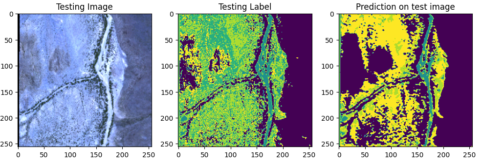
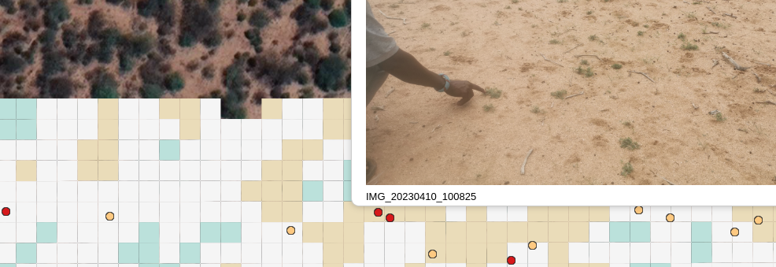
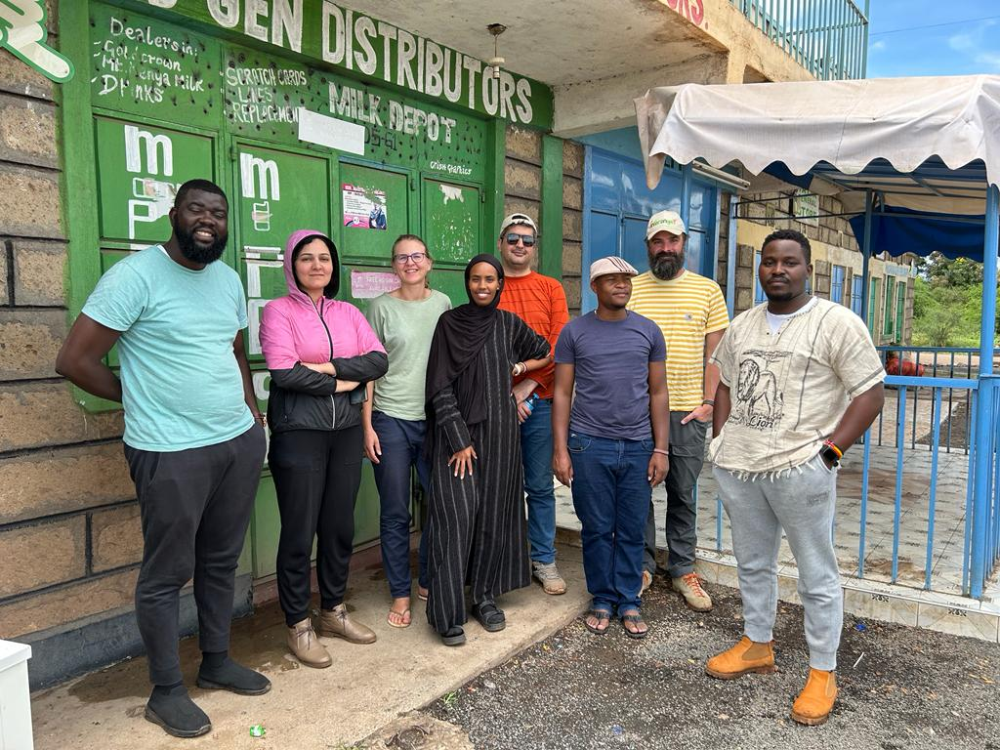

### Building skills for community collaboration and participation in research processes -PhD Training Workshops, 2023-
## Combining local knowledge and remote sensing to support pastoralist decision making.
### Stakeholders & Partners  <img src="pics/Zakieh_Poster.JPG" width="48%" height="auto">
### What is the topic that you could jointly address with these stakeholders? * ground truthing via * drone and gps logger * rating of pasture quality <!-- <img src="pics/wp5_1.png"> -->
#### What are the main needs of your direct stakeholders? * Information on rangeland quality and quantity etc at a bigger scale * Briefing on the devices #### #### How have you come to know their needs? * Kickoff meeting
### Ideas/plans do to engage with stakeholders? <img src="pics/Rangeland Group discussion.JPG" width="48%" height="auto"> <img src="pics/Zakieh_Poster.JPG" width="48%" height="auto"> * regular on-site meetings to present the progress and making sure i'm still on the right track
### Ideas/plans do to engage with stakeholders?   * explain the influence of stakeholder input on model
#### What are your highest hopes and intentions regarding the potential outcomes of these actions/activities? * super precise mapping * interactive and learning app, users are making it better by their contributions. #### #### How would these outcomes be of benefit to the stakeholders? * the better the mapping / contributions, the better the model, the better provided information on rangelands
#### What strengths and resources do you currently possess that will support you to undertake this work? 
#### What might be missing? What are the possible risks and challenges that you might face in undertaking the activities? * lack of patience - the result will only be visible at the end * mistrust / unwillingness to share information * technical difficulties
#### What aspects in particular would you like feedback on? * How to choose the right partners and include everyone? #### #### Where do you feel the need for further guidance or discussion? * Adaptation to the different conditions of the two project areas